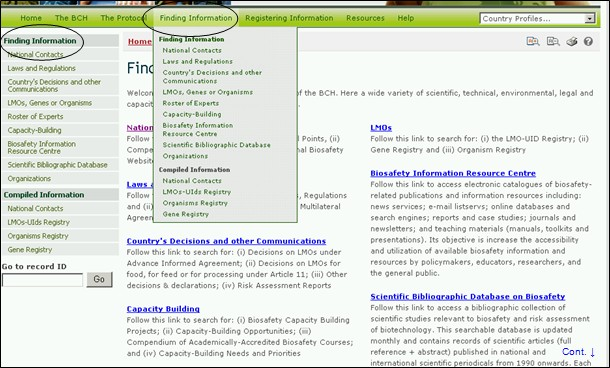
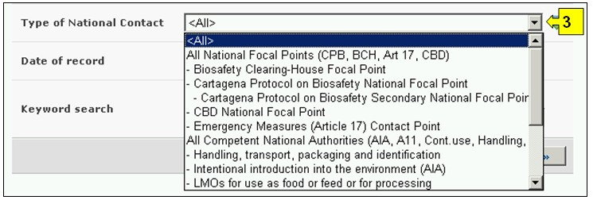
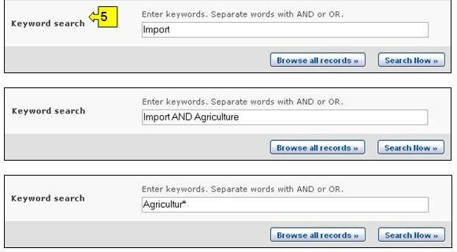
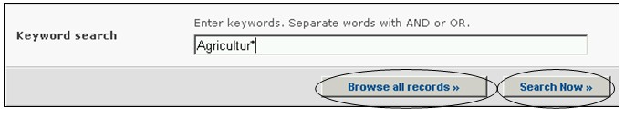

Ссылка: http://bch.cbd.int/database/contacts/
Стороны назначают Национальные компетентные органы и Национальный координационный центр в соответствии со Статьей 19 Картахенского протокола. Поиск этой информации и сведений о Национальных веб-сайтах базах данных по биобезопасности можно осуществить на странице Поиск национальных контактов.
Доступ к системе поиска информации о Национальных контактах можно получить, посредством ссылки в выпадающем меню раздела Finding Information (Поиск информации) на навигационной панели, или используя меню в левой части страницы Поиск информации, или посредством ссылки Национальные контакты в тексте страницы.

Рисунок 3
Базы данных по Национальным контактам дают возможность найти:
-
Национальные координационные центры Картахенского протокола по биобезопасности (НКЦ-КПБ), которые отвечают за связь между Секретариатом КБР и правительствами своей страны;
-
Национальные координационные центры Механизма посредничества по биобезопасности (НКЦ-МПБ), которые отвечают за связь с Секретариатом касательно вопросов, имеющих отношение к разработке и внедрению МПБ;
-
Национальные контактные органы по чрезвычайным мерам для получения уведомлений в соответствии со Статьей 17 Протокола;
-
Национальные компетентные органы, которые уполномочены правительствами стран выполнять административные функции в области биобезопасности в соответствии со Статьей 19 Протокола; и
-
Национальные веб-сайты и базы данных по биобезопасности.

Рисунок 4

Рисунок 5
Страница Поиска Национальных контактов содержит пять полей – вариантов выбора критериев для уточнения поиска. Каждое поле содержит выпадающее меню выбора необходимого критерия. По умолчанию (если критерий не выбран) используется первый пункт меню. Справа от полей выбора критериев расположены кнопки, позволяющие перейти в режим выбора нескольких критериев. В этом режиме возможно добавление критериев поиска путем выбора необходимых критериев при удерживании нажатой кнопки Ctrl (Control) на клавиатуре.
В выпадающем меню поля 1 [Выберите страну] приведен список всех стран, позволяющий выбрать для поиска одну или несколько необходимых стран.

Рисунок 6
В меню поля 2 [Выберите группу стран] приведен список групп стран, позволяющий выбрать для поиска одну или несколько необходимых групп. Список групп стран содержит все основные географические и политические группы, что позволяет осуществлять поиск сведений, предоставленных конкретной группой или группами стран.

Рисунок 7
В меню поля 3 [Тип Национального контакта] перечислены типы Национальных контактных органов, которые дают возможность сузить круг поиска Национальных контактов или группы Национальных контактов в соответствии с их определенными функциями.

Рисунок 8
Меню поля 4 [Дата предоставления сведений] позволяет сузить круг поиска сведений в соответствии с датой их предоставления МПБ. Выпадающее меню содержит ряд временных периодов для оптимизации поиска сведений, предоставленных за определенное время (например, за последний день, за последний месяц, за последний год и т.д.).

Рисунок 9
Поле 5 [Ключевые слова] предоставляет возможность использования ключевых слов для сужения круга поиска. Пользователь может использовать стандартный синтаксис (AND/OR) для комбинации ключевых слов или корневых частей слов (например, «Import OR Export», «координ* AND центр»). В результате поиска с использованием ключевых слов будут представлены только сведения, содержащие конкретные ключевые слова, но не их синонимы (например, в результате поиска с использованием ключевого слова «Maize» будут представлены сведения, содержащие только это слово, и не представлены, содержащие его синонимы «Corn» и «Zea mays»)

Рисунок 10
На странице поиска расположены три кнопки, инициирующие процедуру поиска. Кнопки Search Now (Искать), расположенные вверху и внизу формы поиска, позволяют осуществить поиск, используя выбранные критерии в полях функции поиска. Результаты поиска будут расположены в алфавитном порядке по названию страны (по умолчанию). Кнопка Browse all records (Просмотреть все записи) дает возможность просмотреть все сведения этой базы данных.

Рисунок 11
Страницы Результатов поиска имеют функцию сортировки, расположенную вверху страницы, которая может быть использована для сортировки результатов в соответствии с параметрами, имеющими отношение к данной категории информации. Необходимо отметить, что параметры сортировки результатов изменяются в зависимости от критериев поиска.

Рисунок 12
Пример 1: Предположим, что необходимо определить контактные учреждения Парагвая, связанные с непреднамеренными трансграничными перемещениями ЖИО. Выбрав Парагвай из перечня стран в поле Select a country (Выбрать страну) и «Контактный орган по чрезвычайным мерам в соответствии со Статьей 17» из перечня в поле Type of National Contact (Тип Национального контакта), круг поиска будет сужен до сведений, которые с большей вероятностью будут содержать необходимую информацию.

Рисунок 13
После нажатия кнопки Search Now (Искать) будут представлены результаты поиска, содержащие Национальные контактные органы Парагвая, ответственные за получение уведомлений о чрезвычайных мерах. Ссылка в названии учреждения позволяет открыть страницу с подробной информацией об этом Национальном контактном органе.

Рисунок 14
Пример 2: Предположим, что необходимо найти Координационные центры МПБ в странах АСЕАН/ASEAN. В этом случае необходимо выбрать Азия -Тихий океан – Ассоциация государств Юго-Восточной Азии в поле Select Country Group (Выбрать группу стран) и Координационный центр Механизма посредничества по биобезопасности в поле Types of National Contacts (Типы Национальных контактов).

Рисунок 15

Рисунок 16